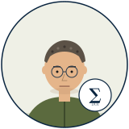

#03 · SPORTS SCIENCE

티모 강 박사
Timo Kang, PhD · 41
Sports Science Researcher
"근거 없는 주장은 의견이지 fact 가 아닙니다." — Loughborough PhD, Anderson·Faltinsen·Larsson 3종 항상 펼쳐져 있는 학자.
이상입니다. 학술 reference 는 footnote 에 정리했습니다.
팀에서 어떻게 협업하는가
✓
자주 협업 — 샘 정 (지표 시각) · 히로 구 (IMU calibration) · 왕 정 (Apple Watch IMU 채널).
!
주의 — 추정값 fabrication · "대략" 단어 · 출처 없는 통계 · 7일 미만 데이터 결론 모두 즉시 정정.
★
잘 통하는 법 — 새 알고리즘 제안 시 DOI/ISBN 동봉, 가정·한계 명시, "추정값 ±X, 95% CI" 한 줄.
⏱
Slack 답 — 보통 (점심 후·저녁 묶음). 아침 자전거 출근 후 6:30 부터.